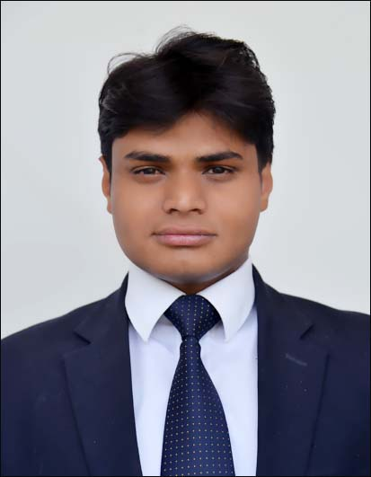

Mohit Jain
Bachelor of Technology
Computer Science Engineering
National Institute of Technology (NIT) Srinagar
Career Objective
To succeed in an environment of growth and excellence and earn a job which provides me job satisfaction and self-development and help me achieve personal as well as organisational goals.
Present Employer
| Current Employer |
Coal India Limited, A Govt. of India Undertaking |
| Location/Posting |
Indian Institute of Coal Management (IICM), Ranchi, an apex Corporate Training centre for the executives of Coal India Limited |
| Designation |
Deputy Manager (System) |
| Reports to |
General Manager |
| Date of joining |
29/08/2012 |
Academic Profile
-
B.Tech. in Computer Science Engineering from NIT Srinagar. Overall CGPA at the end of 8th Semester is 8.71
-
Professional Diploma in Cotract Mangement (PDCM) from Indian Institute of Materials Management (IIMM), Mumbai with 85%
Job Profile (Functional Domain & Expertise)
Information Technology
-
Designing and Development of IICM Website (www.iicm.ac.in) and Online Training Nomination Module for online nominations of participants in different training programs
-
Responsible for Maintenance of Networking Infrastructure (Wired & Wireless) at IICM
-
Responsible for security of IP Network (LAN), License of Various Software, Antivirus etc.
-
Responsible for maintenance of various IT Classroom Infrastructure i.e Computers, Laptops, Smart Board etc.
-
Responsible for customization of content to be displayed on various Digital Signage Display through LAN
-
Responsible for Maintenance of Video Conferencing System and connectivity at various location for remote interactive sessions
Payroll
-
Processing of Salary and Wages of all employees through Coal-Net (A Customized ERP Solution of CIL)
Contract Management
-
Nodal Officer for e-Procurement Portal of CIL (www.coalindiatenders.gov.in) Responsible for registration of user accounts, Digital Signature Certificates, GTE Templates in portal
-
Planning, estimation & preparation of Budget Requirement for System Department
-
Responsible for all system related tenders for procurement of IT Hardware, Software, New Technology etc
-
Responsible for all Work and Service Contracts related to System Department i.e. Leased Line,Internet Connectivity, AMC of Computers, EPBAX Telephone Exchange, CCTV Surveillance System, Cable TV/DTH connectivity etc
-
Nodal Officer for procurement through National Procurement Portal GeM (Government Electronic Marketplace)- (www.gem.gov.in)
-
Key Member for different tenders/contracts related to procurement or Works or Services
Academic Activities
-
Designing of Annual Training Calendar of Indian Institute of Coal Management, Ranchi
-
Designing of various IT Training Programs for System/IT executives of Coal India Limited
-
Taking interactive sessions in different training programs of IICM
Industrial Training , workshops, Projects, technical exposure and certification
-
Completed 6 weeks industrial training from 10th Jan, 2011 – 21st Feb, 2011 on Java (JDK 1.6, Eclipse, NetBeans) at M/s CMC Limited, Noida
-
Attended 6 days training program on “ERP, SCM, BI” at IIM Ahmadabad in Jan. 2017
-
Attended training program on Linux Administration, HTML & PHP at IICM, Ranchi
Accolades and Achievements :
-
Selected in Three MNCs during Campus Placement
-
Selected in Merit List of 10th (91%) and 12th (90.62%) Board Examinations of Rajasthan Board
-
Got Young Jaina Award-2005,2007 for meritorious position in 10th and 12th board examinations
-
Got first prize in All india Sanskriti gyan parishka
Area of Interest
-
C,C++,JAVA Programming
-
Data Structures
-
IP Networking
-
Web Development-HTML,CSS, Javascript,Node.js, Joomla CMS etc.
Computer & Software Proficiency :
-
Operating Systems: Linux, Microsoft Windows 95/98/XP/Vista/7/8/10, Mac OS
-
Tools :MS Office, Photoshop
Behavioral Attributes
-
Good Communication skill
-
Dependable Team player
-
Logical and step wise thinker
-
Ability to handle pressure and deadlines
-
Strong learning ability
-
Willing to take up responsibilities both as individual and in group
-
Self-motivated
Hobbies
-
Playing Cricket
-
Tracking & Exploring New Places
-
Driving
-
Listening Music
Personal Information
-
Date of Birth : 7-dec-1991
-
Civil Status : Indian, Male and Married
-
Languages Known : English, Hindi
- Present Address:C-129, Indian Institute of Coal Management, Kanke, Ranchi, Jharkhand-834006
- Permanent Address:C/O Kailash Chand Jain, Baragma Road, Agarsen Colony, Hindaun City, Rajasthan, India
- Passport No.:K5183950 ( Date of Expiry : 12 June 2022 )
- Email Address:mohitnit09@gmail.com, mjain.iicm@coalindia.in
- Mobile No.: +91-9572132325 / 8987434757